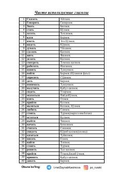

ЧИRus tilidagi eng faol fe'llar va ularning o'zbekcha tarjimasi.
Ushbu o'quv materiali rus tilida eng ko'p qo'llaniladigan fe'llar va ularning o'zbek tilidagi tarjimalari ro'yxatidan iborat. Qo'llanma rus tilini o'rganuvchilar uchun so'z boyligini oshirishda qulay manba bo'lib xizmat qiladi.